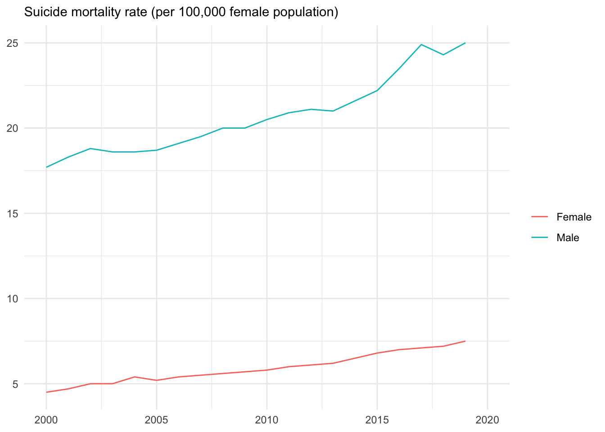

2.6 オープンデータポータル - DBnomics
フランスの数理経済計画予測研究所(CEPREMAP)のマクロ経済分析チーム「マクロ経済観測所」に所属するCEPREMAPモデリングチームは、広範囲な経済モデルを扱うためのソフトウェアDynareの開発と同時に、国内外の公開された経済データを集約したオープンデータポータルDBnomicsを運営しています.
DBnomicsは世界の経済データを一箇所に集め、しかも無料で一般に公開することを目的としたオープンソースプロジェクトです.具体的には、国内機関や国際機関 ― Eurostat, World Bank, IMF, ECB等、87のデータ提供組織・機関 ― から収集された何百万ものデータ系列が提供されています.すでにこれまでに紹介したEurostat, OECD, IMF, BISおよびPenn World Tableも提供されています.
たとえば、2-5でダウンロードしたデータはDBnomicsにおいても取得できます.imfrを使って得た実行為替レートは次のように入力することで得ることできます.
exch_rate_3c <- rdb(ids = c("IMF/IFS/A.CN.ENEER_IX","IMF/IFS/A.JP.ENEER_IX","IMF/IFS/A.US.ENEER_IX"))BISによって取得した長期政策利子率を取得するためには次のように入力します.
policyrate3c <-rdb(ids = c(“BIS/cbpol/M.JP”, “BIS/cbpol/M.SE”, “BIS/cbpol/M.US”))2.6.1 Rパッケージ - rdbnomics
このデータの利用を容易にするためにrdbnomicsと呼ばれるRパッケージが開発されています.rdbnomicsパッケージは、DBnomics データシリーズへのアクセスを提供します.
ダウンロードするデータ系列の指定にあたっては統一的な方法が採用されています.後で示すように、データの取得にあたってはrdb()関数のidb = 引数で指定しますが、そのさい、データ提供組織名/データセット名/データ系列名という形で指定します.たとえば、rdb = WHO/WHS6/WHS6_102.DEU.Aは、データを提供する組織がWHO, データセット名がWHS６、データ系列名はWHS6_102.DEU.Aです.また系列名の末尾のDEUはドイツを示す３文字の国コード、Aは年次データであることを示しています.
2.6.1.1 rdbnomicsのインストール
RパッケージDBnomicsをインストールするには他のRパッケージと同様に次のように入力します。
install.packages("rdbnomics") library(rdbnomics)## Visit <https://db.nomics.world>.2.6.2 rdbnomicsの利用方法
2.6.2.1 rdb()関数を利用したデータ系列の取得
データをダウンロードするためには、rdb()関数を利用します。この関数の利用にあたっては３つの情報が必要となります.
データの提供機関のコードprovider_code
データセット・コードdataset_code
データ系列コードseries_code
この３つの情報を
rdb()関数の引数ids =において指定します.ids引数の書き方は次のようになります.
ids = 提供機関コード/データセット・コード/データ系列コード実際に世界保健機構WHOが提供するドイツの「病床数（人口１万人あたり）」データを取得してみましょう.このためには上の３つの情報が必要となります.データ提供機関コードはWHO, データセット・コードはWHS6, データ系列コードはWHS6_102.DEU.Aです.取得したドイツ病床数データをbeds_deuというオブジェクトに容れるとすると、次のようなスクリプトでダウンロードすることができます.
beds_deu <- rdb(ids = "WHO/WHS6/WHS6_102.DEU.A")結果をstr()関数を使い、beds_deuの変数を確認してみましょう。
str(beds_deu)21の変数（列）がbeds_deuに格納されていることが分かります.ids()関数を利用し、データを取得すると、少なくとも次の10の変数を得ることができます.
- dataset_code
- provider_code
- dataset_name
- series_code
- original_period
- period
- original_value
- value
- @frequency
データベースごとに異なりますが、上記以外に単位unit、地理情報geo、年次、四半期別等の情報freqを取得することもできます.
以下のグラフはデータフレームbeds_deuのデータををもとggplotを利用し、ドイツの病床の時系列変化のグラフを描いたものです.
ggplot(data = beds_deu, mapping = aes(x = period,y = value))+
geom_line()+
labs(x = "year",
y = "per 10000 pupulation",
subtitle = "Hospital beds (per 10 000 population) in German")+
theme_bw()
ドイツにおける病床数
繰り返しになりますが、上述のように、データ系列を取得するためは３つの情報が必要となります.そこで３つの情報を取得するための方法を順番に紹介して行きましょう.
- データを提供する機関のコード名
- その機関の提供するデータセットのコード名
- データ系列のコード名
1. 機関のコード名の取得
機関コード名はrdb_providers()関数を利用することで取得できます.
rdb_providers(code = TRUE)code = 引数はTRUEかFALSEの論理値をとり、既定値はFALSEです.上のように、code = TRUEとした場合、提供機関のコード名が表示されます.既定値FALSEにした場合、機関コード名の他に機関名nama、カバー地域region、ホームページアドレスweb site等が表示されます.
2. データセットコードの取得
このコードの取得のためにはrdb_datasets()関数を使います.この関数では特定の機関を指定せずに、すべてのデータセットのリストをダウンロードすることもできますが、rdb_providers()で取得した機関コード指定した方が効率的です.
rdb_datasets(provider_code = "IMF")これでIMFの提供するデータセット一覧を取得できます.
3. データ系列リストの取得
次に、提供機関IMFのデータセットIFSに、どのようなデータ系列が保存されているかをみます.このためにはrdb_series()関数を利用します.
rdb_series(provider_code = "IMF", dataset_code = "IFS")以上の手順1 ~3はDBnomicsのホームページにおいても行うことができます.ホームページにおいて下の方にスクロールすると、[DBnomics providers]一覧が掲載されています.[IMF]International Monetary Fund選択すると、データセットの一覧を見ることができます.さらに、ここでデータセットInternational Financial statistics (IFS) [IMF/IFS]を選択すると、IFSが有するデータ系列を選択し、ダウンロードすることができるようになっています.
以上でDBnomicsの基本的な利用法の説明は終了です.続けていくつかの利用パタンを紹介しましょう。
2.6.2.2 同一のデータセットから複数のデータ系列を取得する
次に、複数のデータ系列をダウンロードする方法を紹介しましょう.これはc( )を使い、その中にデータ系列名を並べて書くことで簡単にダウンロードできます.以下のスクリプトがその例です.ダウンロードした結果は、beds3cというオブジェクトに格納されています.
beds3c <- rdb(ids = c("WHO/WHS6/WHS6_102.DEU.A", "WHO/WHS6/WHS6_102.JPN.A", "WHO/WHS6/WHS6_102.USA.A"))ここでは、WHOのWorld Health Statistics[WHS6]からドイツ、日本およびアメリカの病床データ -―WHS6_102.DEU.A、WHS6_102.JPN.A、WHS6_102.USA.A ―-をダウンロードし、オブジェクトbeds3cに容れています.
beds3cのデータをもとに３カ国のプロットを描くと、ドイツの病床の水準は日本とアメリカの中間にあるようです.一般的に言われているように、日本の病床数は多く、アメリカの病床数は低い水準にあることが分かります.また、いずれの国も傾向的には病床数は減少しているようです.

ドイツ,日本およびUSAにおける病床数
このグラフは次のスクリプトによって描くことができます.
ggplot(data = beds3c, mapping = aes(x = period, y = value))+
geom_line()+
facet_wrap(~Country)+
theme_minimal(base_size = 9)+
labs(x = NULL, y = NULL)このスクリプトでも、facet_wrap()関数を利用し、国別の複数のグラフを作成しています.facet_wrap()は使い方は次のようになります.
facet_wrap(vars(分類する基準となる変数))また、テーマはtheme_minimal()を利用し、シンプルなテーマを選択しています.表示文字のサイズはbase_size = を利用し、９ポイントに指定しています.
この例ではWHOのWorld Health Statistics[WHS6]というデータセットを利用しました.この他にWHOからは次の４つのデータセットが提供されています.International Health Regulations (2005) monitoring network, Sustainable development goals, Health workforceおよびRoad Safetyです。
2.6.2.3 異なったデータセットから異なったデータ系列の取得
次に異なったデータセットから異なったデータ系列をダンロードしてみましょう.同じWHOの中にHealth workforce[WHO/HWV]というデータセットがあり、その中に「医師数（人口１万人あたり）」のデータが提供されています.病床数と一緒に、このデータも取得してみましょう.いずれも日本のデータです.この例では結果をbed_mdというオブジェクトに容れます.
beds_md <- rdb(ids = c("WHO/WHS6/WHS6_102.JPN.A","WHO/HWF/HWF_0001.JPN.A"))names()関数を利用し、beds_mdが持つ変数一覧を表示させてみましょう.
names(beds_md)## [1] "@frequency" "Country"
## [3] "COUNTRY" "dataset_code"
## [5] "dataset_name" "FREQ"
## [7] "Frequency" "indexed_at"
## [9] "Indicator" "INDICATOR"
## [11] "original_period" "original_value"
## [13] "period" "provider_code"
## [15] "REGION" "series_code"
## [17] "series_name" "Sex"
## [19] "SEX" "UN Region"
## [21] "UNREGION" "value"
## [23] "WHO region" "World Bank income group"
## [25] "WORLDBANKINCOMEGROUP"データフレームbeds_mdが25変数（列）を持っていることが分かります.変数（列）はDBnomicsでは統一されています、つまり病床数データと医師数データは同一の変数の中にあります（異なる場合、変数列が追加されます）.このため病床数データの行が終了すると、医師数データの行が追加されてます.
このためデータを処理するさい、INDICATORもしくはseries_code変数によって識別する必要があります.
データフレーム名$変数名を使ってデータフレームの変数を指定し、INDICATORを表示させると、19行めまではWHS6_102ですが、20行めからはHWF_0001であることが分かります.つまり19行めまではベッド数データ、20行めからは医師数のデータであることが分かります.
beds_md$INDICATOR## [1] "WHS6_102" "WHS6_102" "WHS6_102" "WHS6_102" "WHS6_102" "WHS6_102"
## [7] "WHS6_102" "WHS6_102" "WHS6_102" "WHS6_102" "WHS6_102" "WHS6_102"
## [13] "WHS6_102" "WHS6_102" "WHS6_102" "WHS6_102" "WHS6_102" "WHS6_102"
## [19] "WHS6_102" "HWF_0001" "HWF_0001" "HWF_0001" "HWF_0001" "HWF_0001"
## [25] "HWF_0001" "HWF_0001" "HWF_0001" "HWF_0001" "HWF_0001" "HWF_0001"
## [31] "HWF_0001" "HWF_0001" "HWF_0001" "HWF_0001" "HWF_0001" "HWF_0001"
## [37] "HWF_0001" "HWF_0001" "HWF_0001" "HWF_0001" "HWF_0001" "HWF_0001"
## [43] "HWF_0001" "HWF_0001" "HWF_0001" "HWF_0001" "HWF_0001" "HWF_0001"次に、このデータを使って医師数とベッド数の推移のグラフを描いていみましょう.
最初に、このINDICATORをもとにベッド数と医師数データをそれぞれ別のデータフレーム―beds_jpn, doctor_jpn―に容れます.
beds_jpn <- beds_md %>% filter(INDICATOR == "WHS6_102") doctor_jpn <- beds_md %>% filter(INDICATOR == "HWF_0001")いずれもfilter()関数を使ってベッド数のデータの入っている行（もしくは医師数のデータの入っている行）を抽出しています.なお、filter()関数の書き方は
filter(データフレーム名、抽出条件)です.ただし、この例ではパイプ%>%で連結していますので、データフレーム名は省略しています。抽出条件はINDICATOR == "WHS6_102"です。これはINDICATOR変数が文字列“WHS6_102”に等しい行だけを抽出しなさいということを意味します。
最後に、抽出した結果つまりデータフレームをggplot()に渡します。そしてggplot2を使って描いたグラフをオブジェクトbeds_figに容れます。
beds_fig <- ggplot(data = beds_jpn, mapping = aes(x = original_period, y = value, group = INDICATOR)) +
geom_line()+
labs(
subtitle = "Hospital beds (per 10 000 population)",
x = NULL, y = NULL
)+
scale_x_discrete(breaks = seq(2000, 2019,5))+
theme_minimal()+
annotate("text", x = 12, y = 145, label = "DBnomics is a database of\n macro-economic data aggregated \nfrom a great number of world-wide providers")beds_figの作成にあたってはscale_x_discrete()を利用し、x軸のラベルを変更しています.x軸の変数’orignal_period’は見た目では連続変数ですが、じっさいには文字列変数です.データフレームbeds_jpnの中のoriginal_period変数にclass()を適用すると、
class(beds_jpn$original_period)## [1] "character"’orignal_period’変数が文字列であることが分かります。変数の型を変換しても良いのですが、ここではそのまま文字列として扱い、x軸のラベルを変更します。このためにscale_x_discrete()を利用します. discreteは離散変数を意味し、x軸を離散変数として扱うことを示しています. 引数breaks =によってラベルの表示範囲を指定します. seq(2000, 2019, 5)は開始年を2000年とし、最後の年を2019とし、5年おきにラベルをつけるということを指示しています.
さらに、annotate()関数を使い、注釈をグラフに入れてあります.annotate(“text”, x = 12, y = 145, label = "“)が示しているように、annotate()関数を使ってテキスト注釈を挿入する場合は、”text",そしてテキストの位置をx軸とy軸の座標で指定します。その上で挿入する注釈をlabel = ""に記入します。
同様に、医師数データを表示するスクリプトは次のようになります
doctor_fig <- ggplot(data = doctor_jpn, mapping = aes(x = original_period, y = value, group = INDICATOR))+
geom_point(shape = 16, size = 2)+
labs(
subtitle = "Medical doctors (per 10,000)",
x = NULL, y = NULL
)+
scale_x_discrete(breaks = seq(1990, 2019, 5))+
theme_minimal()以上の2つのグラフ – beds_figとdoctor_fig – を表示させますが、そのさい、グラフのレイアウトを調整するRパッケージ’patchwork’を使い、2つのグラフを縦に並べています.
beds_fig/doctor_fig
日本における病床数と医師数
2.6.2.4 異なったデータ提供機関および異なったデータセットからデータ系列を取得する
これまではWHOという同一の機関からデータを取得してきましたが、最後に、異なった機関からのデータを取得する方法を紹介しておきましょう.
たとえば、アメリカにおける2000年台以降の失業率と自殺率の関連を知りたいとします.このためにWDIからは自殺率、ILOから失業率をダウンロードするとします.各種の機関・組織からデータを収集しているDBnomicsではデータベース横断的なデータの取得がとても簡単です.上で紹介した方法と同様に、rdb()関数を利用し、引数ids =にWDIとILOのデータを指定するだけです.
WDIの提供するアメリカの自殺率データのDBnomics形式の指標名は次のとおりです.ここでは性別の２種類のデータが指定されています.“WB/WDI/SH.STA.SUIC.MA.P5-US”と“WB/WDI/SH.STA.SUIC.FE.P5-US”です.
ダウンロードには上述のようにrdb(ids = "")を利用します.
suicide <- rdb(ids = c("WB/WDI/SH.STA.SUIC.MA.P5-US","WB/WDI/SH.STA.SUIC.FE.P5-US"))ggplot(data = suicide, mapping = aes(x = as.integer(original_period), y = value,group = series_name ))+
geom_line(aes(color = series_name))+
labs(
subtitle = "Suicide mortality rate (per 100,000 female population)",
x = NULL, y = NULL
)+
scale_color_hue(name = "",labels = c("Female", "Male"))+
xlim (2000,2020)+
theme_minimal()
このグラフは自殺率データをもとに描いたグラフです.グラフのx軸にはoriginal_period変数が利用されています.この変数original_periodは文字列型です.
class(suicide$original_period)## [1] "character"グラフのx軸にするにはこのデータ型は扱いづらいのでグラフ作成にあたってはas.integer()関数によって整数型に変化しています.
class(as.integer(suicide$original_period))## [1] "integer"ケース・ディートン著『絶望死のアメリカ―資本主義がめざすべきもの』は、おもにアメリカ疾病予防管理センター（CDC）のデータをもとに1990年台から低学歴白人アメリカ人中年男性の自殺率だけが急増している事実を報告しています.グラフは学歴別ではありませんが、男性の自殺率が、女性に比べ、高い水準にあり、とりわけリーマンショック後に急増していることが伺えます.
また、失業率データは45-54歳年齢の男性データを利用します.これは学歴別の失業率データです.
- “ILO/UNE_DEAP_SEX_AGE_EDU_RT/USA.BA_453.AGE_10YRBANDS_Y45-54.EDU_ISCED11_3.SEX_M.A”
- “ILO/UNE_DEAP_SEX_AGE_EDU_RT/USA.BA_453.AGE_10YRBANDS_Y45-54.EDU_ISCED11_6.SEX_M.A”
unemp <- rdb(ids =c( "ILO/UNE_DEAP_SEX_AGE_EDU_RT/USA.BA_453.AGE_10YRBANDS_Y45-54.EDU_ISCED11_3.SEX_M.A","ILO/UNE_DEAP_SEX_AGE_EDU_RT/USA.BA_453.AGE_10YRBANDS_Y45-54.EDU_ISCED11_6.SEX_M.A"))学歴別の中年(45-54歳)男性の失業率の推移を見てみましょう.期待どおりですが、低学歴グループが高い失業率を示しています.
ggplot(data = unemp, mapping = aes(x = original_period, y = value,group = classif2))+
geom_line(aes(color = classif2))+
labs(
subtitle = "Male unemployment rate, by education level",
x = NULL, y = NULL
)+
scale_color_hue(name = "",labels = c("Upper secondary \neducation", "Bachelor's \nor equivalent level"))+
scale_x_discrete(breaks = seq(1990, 2019,5))+
theme_minimal()
学歴別失業率
グラフから理解されるように、あきらかに低学歴グループの失業率が、学士卒のグループよりも高いことが分かります.つまり、このデータは労働市場のショックが不均等に低学歴グループに影響を与えることを示しています.
最後に、こうした低学歴失業率と自殺率の単純な相関を観察してみます.このために次の4つの手順を踏みます.
- 自殺率データから男性の自殺率だけを抽出する
- 失業率のデータから低学歴男性の失業率を抽出する
- 上の２つのデータを結合する
- 必要な変数のみ取り出し、ggplot2によって散布図を描く
1. 自殺率データから男性の自殺率だけを抽出する
データフレームsuicideにfilter()関数を適用し、series_code が “WB/WDI/SH.STA.SUIC.MA.P5-US” に一致する行を取り出します.そしてその結果をsuicide_maleという名前のオブジェクトに容れます.
suicide_male <- suicide %>%
filter(series_code == "WB/WDI/SH.STA.SUIC.MA.P5-US" )2. 失業率のデータから低学歴男性の失業率を抽出する
同様に、filter()関数を使い、データフレームsuicideから低学歴中年男性の失業率を抽出します.具体的には、classif2が“EDU_ISCED11_3”に一致する行を取り出します.ここでは抽出された結果はunemp_low_edというオブジェクトに容れます.
unemp_low_ed <- unemp %>%
filter( classif2 == "EDU_ISCED11_3")3. 上の２つのデータを結合する
上で抽出した２つのデータフレームを結合します.このためにはinner_join()関数を利用します.たとえば、A,Bという２つのデータフレームを結合するとします.この場合、inner_join()は次のように書きます.
inner_join(データフレームA、データフレームB, by = "結合の基準となる変数名")それではこの関数を使い、２つのデータフレーム — suicide_maleとunemp_low_ed — を結合します.結合にあたっての共通の変数はoriginal_periodになります.結合されたデータフレームはsuicide_unemploymentというオブジェクトに容れます.
suicide_unemployment <- inner_join(suicide_male,unemp_low_ed,by = "original_period")4 必要な変数のみ取り出し、ggplot2によって散布図を描く
次に、select()関数を利用し、必要な変数を取り出します.その際、変数名も変更しておきます.select()関数は引数に抽出する変数名を入力するだけですが、変数名を変更する場合は新しい変数名 = 古い変数名と入力します.
su <- suicide_unemployment %>%
select(original_period,suicide_rate = value.x, unemp_rate = value.y)この例では結果をsuというオブジェクトに格納しています.このデータフレームを利用し、最後に、ggplot2で自殺率と失業率の散布図を描くとします.
ggplot(data = su, mapping = aes(x = unemp_rate, y = suicide_rate))+
ggplot(data = su, mapping = aes(x = unemp_rate, y = suicide_rate))+
geom_point(size = 1)+
geom_smooth(se = FALSE,size = 1,color = "gray")+
scale_y_continuous(
labels = scales::number_format(accuracy = 0.1))+
scale_x_continuous(
labels = scales::number_format(accuracy = 0.1))+
labs(
x = "Male unemployment rate (45-54), \nupper secondary education ", y = "Male suicide mortality rate \n(per 100,000)"
)+
theme_minimal()+theme(text = element_text(size = 9))
男性自殺率vs.低学歴中年労働者失業率
グラフ作成にあたって利用されたデータがそれほど適切なものではないため、とくに男性失業率の年齢階層別データを利用していないために、失業率と自殺率の間に何らかの関連を見出すことはできませんでした。